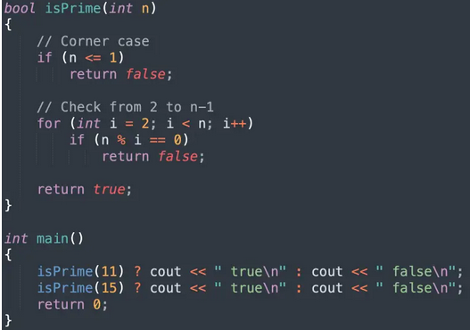
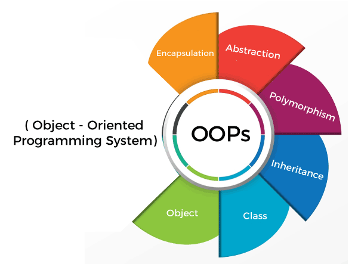
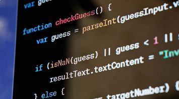
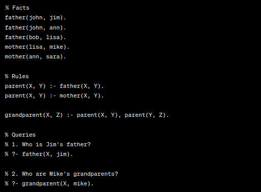

Procedural Programming
let's talk about Procedural Programming! Imagine you're in the kitchen, about to bake a delicious cake. Procedural Programming is a lot like following a recipe to bake that cake. It's all about giving clear, step-by-step instructions to a computer to complete a task. In Procedural Programming, we take a linear approach, just like following a recipe from start to finish. We treat the data, like the ingredients, and the instructions, like mixing or baking, as separate things. Instead of having one big set of instructions, we break them down into smaller sets called procedures. These procedures are like mini-tasks, each with their own series of steps. It's kind of like crafting a sandwich – each step, like "take two slices of bread" or "spread peanut butter on one slice," is like a procedure. But that's not all! In Procedural Programming, there are a few key concepts to explore:
- Predefined Functions: These are like specialized instructions that already have names, such as 'cut,' 'mix,' or 'spread.' They are built into the programming language and help us perform common tasks without having to write out all the details each time.
- Local Variables: Think of these as containers that hold information, but they can only be used within a specific part of the instructions. It's like having a bowl that you can only use in one step of the recipe.
- Global Variables: These are like bowls or utensils that you can use anywhere in the recipe. They are available for use in all the steps.
- Modularity: This is a way of organizing our instructions. It's like having different groups of tasks that can be completed one after the other to achieve a bigger goal, just like preparing all the sandwich ingredients before assembling it.
- Parameter Passing: This is how we can give additional information to our procedures. For example, if you have a step that says "spread jelly," you might need to specify what type of jelly to spread. Parameter passing allows us to do that.
Advantages of Procedural Programming:
- General-Purpose: Procedural Programming is versatile and can be used for a wide range of tasks.
- Simplicity: It's relatively easy to write and understand code in this style, and it works well with compilers and interpreters (tools that convert code into instructions a computer can follow).
- Learning Resources: There are plenty of books and online courses available that teach proven techniques and algorithms, which makes it easier for beginners to learn.
- Portability: Code written in this style can be used on different types of computers, which is handy if you want your program to work on various machines.
Disdvantages of Procedural Programming:
- Complexity: As programs get larger and more intricate, writing code in this style can become quite complex.
- Limited reusability: When you write code using a procedural approach, it may not be easy to reuse it in different programs, which means you might need to rewrite the code for other uses.
- Abstract concepts: It can be hard to link procedural code with real-world objects or ideas, making some tasks more complicated.
- Data handling: Procedural programming often puts more emphasis on operations (what the program does) rather than data (the information the program works with). This could cause issues when dealing with sensitive or secure data.
- Data exposure: In this coding style, data is available to the entire program, possibly posing security risks in more complex programs.
Examples
- C
- Pascal
- COBOL
Object Oriented Programming
Now, let's shift gears to the captivating world of OOP! Brace yourselves for a programming paradigm that's nothing short of revolutionary. In OOP, we're not just writing code; we're creating virtual entities called "objects" that have their own unique characteristics and superpowers. These objects take center stage, and it's all about what they can do, rather than how we make them do it. This approach is like a secret weapon for tackling massive, intricate software projects. From crafting manufacturing system simulations to developing cutting-edge mobile apps, OOP's got you covered. But wait, there's more! OOP isn't just about coding; it's a team player. It's fantastic for collaborative development, allowing teams to break down projects into manageable pieces. Plus, it comes with superpowers like code reusability, scalability, and turbocharging efficiency. The adventure begins by identifying all the incredible objects we'll work with and uncovering how they relate to each other – this part is called "data modeling." Objects can be as diverse as real-world people (with names and addresses) or even little software wonders like widgets. Once we've discovered our objects, each one gets a "class" badge, which tells us what kind of data it holds and the cool tricks it can perform (methods). These objects chat with each other using we
Main Principles of OOP:
- Encapsulation: Imagine objects as secretive vaults! In OOP, we keep all the essential stuff inside objects and only reveal what's needed. Each object's inner workings remain private in a class, safeguarding them from prying eyes. Others can only access a handpicked list of functions, ensuring data security.
- Abstraction: Abstraction is like an OOP magic trick! Objects disclose just enough for others to use, concealing the underlying complexity. This approach makes it simpler for developers to modify or introduce new features later on, akin to adding layers to your favorite sandwich.
- Inheritance: Picture inheritance as hand-me-downs for classes! It lets classes borrow code from others. Objects can form connections and subclasses, inheriting logic while preserving their distinct identity. It's like building upon existing knowledge, saving time and guaranteeing accuracy.
- Polymorphism: Visualize objects as shape-shifting actors! They can assume various roles and behaviors, courtesy of polymorphism. It allows a single object to adjust to diverse situations, diminishing the need for repetitive code. It's like a superhero with distinct costumes for various missions!
Advantages of OOP
- Reusability: No more reinventing the wheel! OOP enables code reuse via inheritance, conserving time and effort.
- Productivity: OOP serves as your productivity catalyst. With libraries and reusable code, programmers can create new programs rapidly.
- Upgradability and Scalability: OOP empowers developers to independently enhance system functionalities, making upgrades effortlessly manageable.
- Interface Descriptions: OOP streamlines external system descriptions using smart message-passing strategies for object communication.
- Security: Encapsulation and abstraction offer a protective layer for complex code, easing software maintenance and shielding internet protocols.
- Flexibility: Polymorphism permits functions to adapt to various classes, and objects can share the same interface.
Disadvantages of OOP:
- Complexity Overload: OOP can sometimes feel like an intricate web of objects, classes, and connections. For smaller projects, this complexity might appear excessive, making you long for the simplicity of alternate programming paradigms.
- The Need for Speed: OOP can introduce a bit of a speed bump in terms of performance. All those layers of abstraction and dynamic method calls can slow things down a tad compared to more straightforward approaches.
- Memory Hog: Each object you create in OOP carries a little extra baggage in terms of memory. If you're working in resource-constrained environments, this can be a real headache. Verbosity Overload: OOP code can sometimes be a bit wordy. You might need to write more lines of code to do the same thing as you would in other paradigms. It's like writing a novel when a short story would do.
- Not Always the One: Let's face it; OOP isn't the hero for every mission. In certain domains like embedded systems or real-time applications, it might be better to suit up with a different programming style. OOP can be a challenging endeavor, particularly for novices. You'll need to invest considerable effort into understanding concepts like inheritance, polymorphism, and encapsulation. But hey, once you've conquered them, you'll feel like a code-wielding superhero!
Examples
- Python
- Java
- C#
Functional Programming
Let's dive into the exciting world of functional programming languages! Imagine you have a magic wand that can transform things. Functional programming languages are like magic spells for computers! Instead of giving the computer a series of step-by-step instructions like in other types of programming, in functional programming, we give it special functions to work with. These functions are like little helpers that can take something in, do some magic with it, and give us something back. No messy steps, just pure magic!
Main Principles:
- Function Superheroes: In functional programming, functions are like the superheroes of code. They can do incredible things, and you can even create your own functions to make the computer follow your every command.
- No Sneaky Surprises: Functional programming is all about keeping things clean and safe. No hidden surprises that mess up your code, just like having a reliable robot friend who does exactly what you say, no tricks!
- Treasure Your Data: In this coding world, data is like treasure. You guard it and don't change it. Instead, you craft new data from the old, just like mixing magical ingredients to create new potions!
- Recursion: Time-Travel Magic: Ever wanted to go back in time to help your past self? Well, in functional programming, you can do something similar with recursion. Functions call themselves to solve problems, like a time-travel adventure!
- Immutable Magic: Once you create something, it stays as it is. No changes allowed! You create copies with tweaks, just like having a never-ending magical notebook where you add new pages instead of erasing.
- Immutable Magic: Once you create something, it stays as it is. No changes allowed! You create copies with tweaks, just like having a never-ending magical notebook where you add new pages instead of erasing.
Advantages:
- Code Superpowers: Functional programming is like sprinkling magic dust on your code. It keeps everything tidy, elegant, and crystal clear. Say goodbye to messy, mind-boggling chaos!
- Bug-Proofing Brilliance: Think of it as your trusty bug-buster superhero. With functions that don't play tricks and absolutely no surprise villains, you code with unwavering confidence.
- Reuse Like a Pro: Functional programming is the ultimate recycling champion. You craft nifty, little code pieces that you can use over and over, saving you time and making your code a lean, mean efficiency machine .
- Parallel Universe: Ever wanted to be in multiple places at once? Functional code is your multi-tasking wizardry. It can handle several tasks simultaneously, giving your program a turbo boost on today's multi-core computers.
- Time Travel with Recursion: Recursion is like your secret time-travel hack. It conquers complex problems by slicing them into bite-sized chunks and summoning functions within functions. It's seriously mind-blowing!
- Data Treasures: Data becomes your hidden treasure chest. You never change it; you craft duplicates with tweaks. This keeps your code as predictable and secure as a fortress.
Disadvantages:
- Steep Learning Cliff: Learning functional programming is like scaling a challenging mountain. It's akin to mastering a new language or unlocking a whole new level of magical spells.
- Community Quest: The functional programmer clan, while growing, isn't as enormous as some other groups. So, finding help or resources might feel like a thrilling treasure hunt at times.
- Performance Gambles: Sometimes, functional code may play a bit slower than code written in other styles. But no worries! Modern compilers are like wizards that make it faster.
- Brainpower Required: Functional code can be like tackling complex puzzles. It's a bit abstract, so you'll need to engage your brainpower to unravel its mysteries.
Examples
- Haskell
- Scala
- Clojure
- Haskell
- Scala
- Clojure
Scripting Languages
Scripting languages! These are like your trusty sidekicks for getting things done quickly and easily, especially when you want to automate tasks. Buckle up, because we're going on an adventure.
Main Principles:
- Interpreted: Think of scripting languages as storytellers. They read the story one line at a time, making it easy for you to follow along.
- High-Level: They speak plain and simple language, like your best buddy. No need for fancy jargon here!
- Dynamic Typing: These languages are shape-shifters. Variables can change their forms while the program is running, which can be pretty cool, but watch out for surprises.
- Easy Syntax: They use short and sweet sentences, just like your favorite bedtime story. Anyone can understand them.
- Lots of Helpers: It's like having a magical toolbox full of handy tools. They come with lots of ready-made stuff to help you out.
Advantages
- Fast and Easy: Scripting languages are like turbocharged go-karts. You can zoom through tasks quickly without waiting for a long setup.
- Works Everywhere: They're like language translators for computers, so they can run on any computer, no matter where you are.
- Automation Magic: Want to make your computer do chores for you? These languages are your go-to wizards for automation.
- Easy to Read: They tell stories in simple words, just like your favorite adventure book. It's a breeze for anyone to read and understand.
- Lots of Friends: These languages have big fan clubs! Many people use them, so you'll always find friends to help you out.
Disdvantages
- Not Super Fast: While they're speedy, they might not win the Olympic sprint. They need a bit of translation time to talk to the computer, so they're not the best for super-fast or gigantic tasks.
- Sometimes Not Very Safe: Because they're so flexible, you need to keep an eye out for surprises. Sometimes they can let unexpected things happen.
- Not for Giant Projects: While they're awesome for everyday tasks, they might struggle with enormous projects.
- Not Total Control: They can't control every little detail of the computer. They're more like remote controls for your TV, not the TV itself.
- Surprises Sometimes: Brace yourself for the occasional surprise! Since they can change on the fly, they might throw you a curveball now and then.
Examples
- Ruby
- JavaScript
- Pearl
Logical Programming Languages: Unveiling the Logic of Code!
Imagine a world where you don't have to tell the computer exactly what to do at every step. Instead, you describe the relationships, rules, and knowledge, and the computer figures it all out!
Principles of Logical Programming Languages:
- Pattern Matching Mastery: Logical languages excel at pattern matching. You specify a pattern, and the computer hunts down matching solutions.
- Declarative Style - Say What You Want: In logical languages, you simply declare what you want to happen, and the computer takes care of the rest.
- Logic-Based Brilliance: Logic is the key. You define facts and rules using logic, letting you express intricate relationships and constraints with ease.
- Backtracking Brilliance: If a solution doesn't work out, no problem! Logical languages are fantastic at backtracking and exploring different paths to find the right answer.
Advantages
- Talk to the Computer in Plain Language: The syntax of logical languages is so close to plain language that it feels like you're having a conversation with the computer. It's incredibly user-friendly!
- High-Level Power: Logical languages allow you to work on a high level of abstraction. You can express complex relationships and rules in a clear and concise way.
- Unlock the Power of Reasoning: These languages excel at solving complex logical problems, making them perfect for puzzles, expert systems, and more.
- Inference Engines at Your Service: Logical languages come with built-in inference engines that can deduce conclusions from the information you provide. Perfect for systems that need to make decisions!
- Knowledge Representation: They're unparalleled for representing and querying knowledge bases. This makes them superstars in AI applications, rule engines, and expert systems.
Disadvantages
- Efficiency Challenges: Sometimes, logical languages can be slower for certain tasks due to extensive backtracking and searching for solutions. But don't worry; efficiency is improving!
- Complexity Quest: Writing efficient and complex logical programs can be a bit challenging. You need to understand how the system performs inference and backtracking.
- Limited Application: While they're perfect for certain domains, logical languages might not be the best choice for every programming task.
- Mind-Bending: Learning to think in terms of logical rules and predicates can be a bit of a puzzle, especially if you're new to the paradigm.
- Expect the Unexpected: The non-deterministic nature of logical programming can lead to surprising results if not tamed by a skilled programmer.
Examples
- Prolog
- Datalog
- Mercury